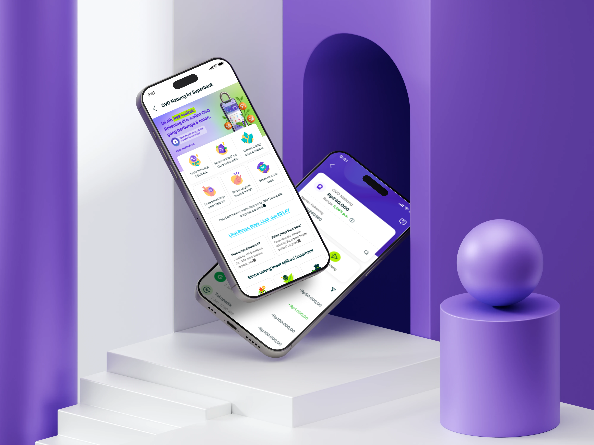

Building a Bank from Scratch
Designing the full product experience of a new digital bank — from zero to launch.

Superbank at a Glance
Superbank is Grab's digital bank in Indonesia — built from zero to 6 million users in under three years. I worked across Ecosystem Integration, Payment, and Lending, while helping grow design culture from the inside.
Superbank grows through Grab and OVO, so onboarding quality is everything. I redesigned the Grab linkage flow to reduce drop-off, then led OVO Nabung end-to-end — cutting registration from 21 fields to 3 by reusing existing KYC data. Full compliance was deferred to the loan stage, where users were already motivated to complete it. The experience felt like a natural upgrade, not a new product — and became the onboarding blueprint for every ecosystem partner after.

Full case study → OVO Nabung
Payment is what turns a bank account into a daily habit. I built Superbank's payment layer from scratch — BI-Fast, QRIS, Bill Payment, and Cards — then extended it into rewards, lending, and a shared standardisation layer. It became the foundation everything else plugged into.
Most users arrive through Grab and OVO, so intent wasn't the problem — conversion was. I designed a joint application flow for ecosystem users and a loan channeling integration with Akulaku. Both came down to the same challenge: high-intent users losing confidence at the ecosystem handoff. The work was about making sure they didn't.
I ran sharing sessions, joined hackathons, and mentored three designers — one converted to full-time. Not a formal role, just something the team needed.